![]()
Declared using Continuation Character (\):
s = 1 + 2 + 3 + \
4 + 5 + 6 + \
7 + 8 + 9
Declared using parentheses () :
n = (1 * 2 * 3 +
7 + 8 + 9)
Declared using square brackets [] :
footballer = ['MESSI',
'NEYMAR',
'SUAREZ']
Declared using braces {} :
x = {1 + 2 + 3 + 4 + 5 + 6 +
7 + 8 + 9}
Declared using semicolons(;) :
flag = 2; ropes = 3; pole = 4Python Ecology Lesson
Attribution
This lesson is based on the Ecology Data Carpentry lesson.
All Data Carpentry instructional material is made available under the Creative Commons Attribution license.
Prerequisites
To set up your Python development environment locally, you will need to install the following:
We will use Jupyter notebook online.
Download the data
TODO
Objectives
- What is Python?
- Why learn Python?
- Jupyter notebook interface
- Create a reproducible project
- Variables
- Sequences: Lists and tuples
- Dictionaries
- Functions and arguments
- Dataframes and groups
- Plotting with Pandas
- Indexing, slicing and indexing dataframes
- Data types and formats
- Combining dataframes
- Data workflows and automation
- Plotting with plotnine
- Additional functions
- Additional resources
- Summary
What is Python?
- Python
->both the programming language and the software that interprets the scripts.
IDE software
Integrated Development Environment (IDE) -> an open-source web application that allows you to interact with Python. It allows us to create and share documents that combine code, graphs, and narrative text.
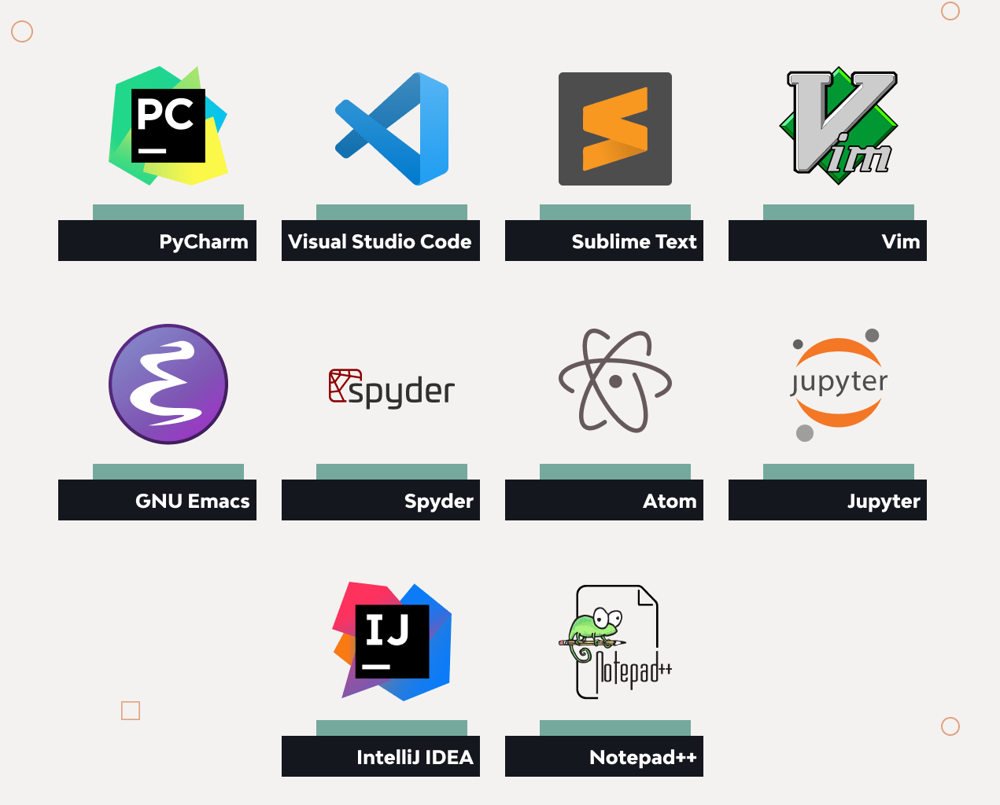
Why learn Python?
- R doesn’t involve lots of pointing and clicking - easy to redo analysis if you collected more data.
- R code is great for
reproducibility- obtain same results from same dataset using same analysis. - R is
extensibleandinterdisciplinary- ~20,000 packages to extend its capabilities, and statistical approaches from many scientific disciplines can be combined. - R works on
data of all shapes and sizes- it is designed for data analysis. - R produces
high-quality graphics- can adjust any aspect of your graph. - R has a
large community- mailing lists and websites (Stack Overflow). - R is
open-sourceandcross-platform- Anyone can inspect the source code. - Less chance for mistakes.
Jupyter notebook interface
We will use Jupyter Notebook online.
See the following details about the Jupyter Notebook interface.
What can you do in Python?
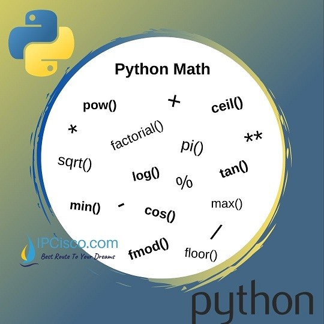
What can you do in Python?
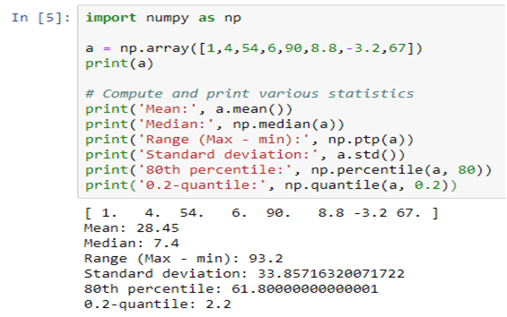
What can you do in Python?
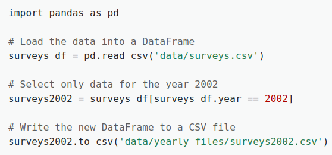
What can you do in Python?
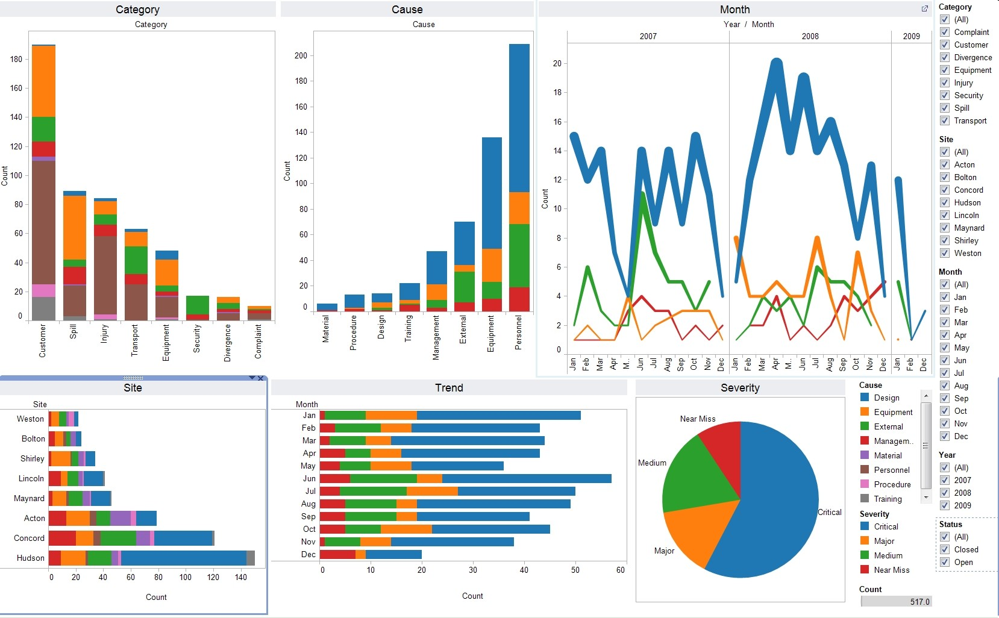
What can you do in Python?
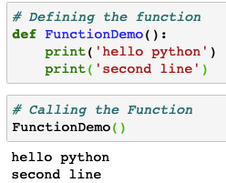
What can you do in Python?
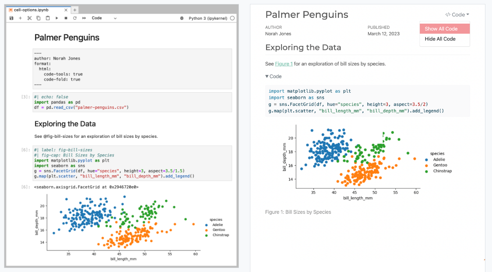
What can you do in Python?

What can you do in Python?
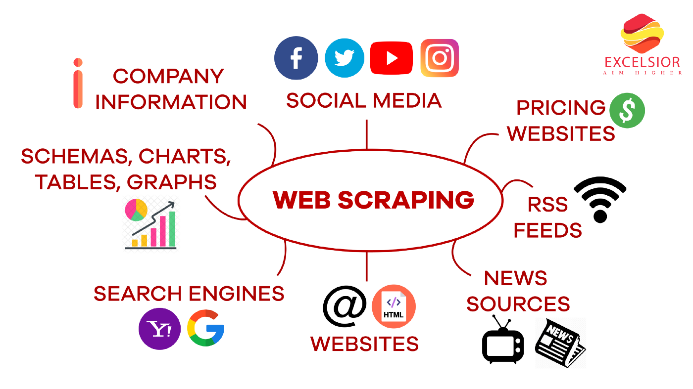
What can you do in Python?
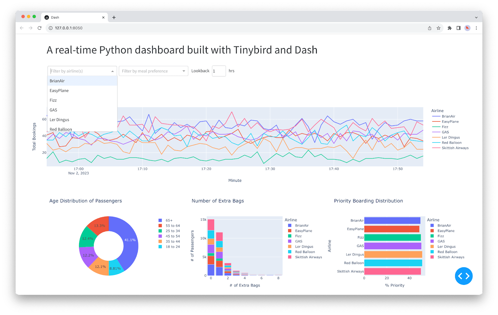
Create a new project
- It is good practice to keep a set of related data, analyses and text in single folder called the
working directory. - You can easily share it with others without worrying about whether or not underlying scripts will still work.
- Only ever use relative paths and not absolute paths.
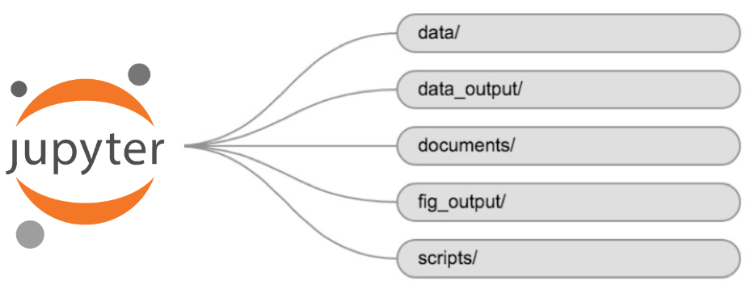
Absolute vs relative paths
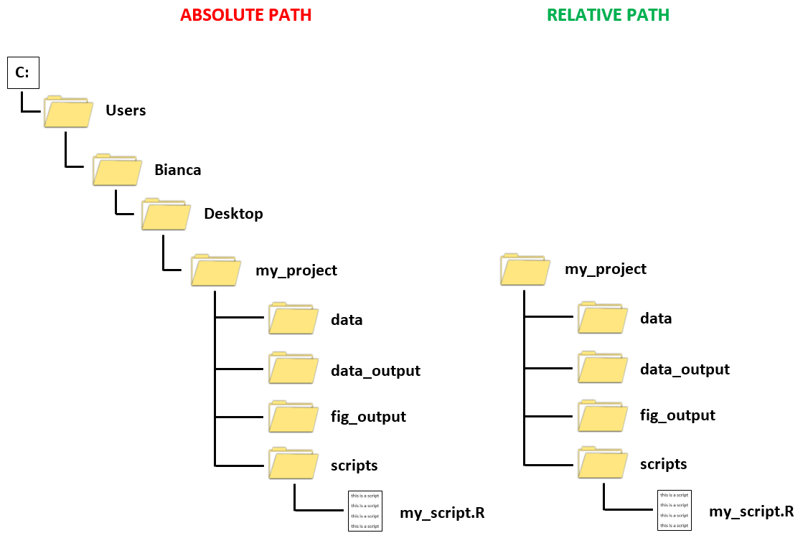
Time for…
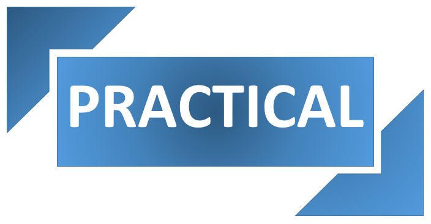
Your working directory should look like this
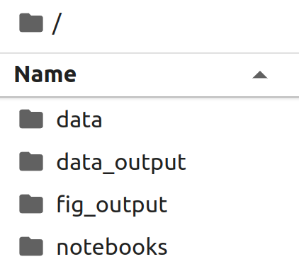
Working directory = where R looks for files that you ask it to load, and where it will put any files that you ask it to save.
Running code in Jupyter notebooks
- Enter code or text into the input area and click play (or Ctrl + Enter or Shift + Enter for the shortcut) to execute the content of the specific cell.
- When you execute a code cell, that code is sent to an execution kernel, and the result is returned in the output area of the notebook.
- Pressing the + button in the menu bar will add a new cell.
- All your commands, as well as any output, will be saved as part of the notebook file.
Time for…
Seeking help (1/3)
- Check under the Help menu
- Type
help() - Type
?objectorhelp(object)to get information about an object - Python documentation
- Pandas documentation
Seeking help (2/3)
- Finding more libraries and functions
- To search all available libraries, use the Python Package Index (PyPi) website
- Google
Python <task> - Many libraries also have websites with additional help, tutorials, etc.
- Dealing with error messages (known as the Python traceback)
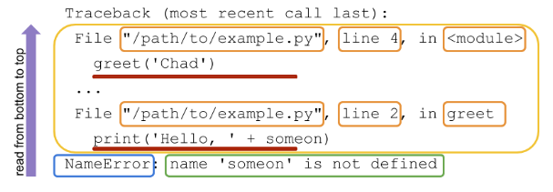
Seeking help (3/3)
- Where to ask for help:
- Friendly colleagues
- Stack Overflow: https://stackoverflow.com/questions/tagged/python
- Python help mailing list: https://www.python.org/community/lists/
- Use correct vocabulary
Time for…
Python statements
- A Python statement is an instruction that the Python interpreter can execute.
- Types of statements: Assignment, Conditional, or Looping statements, etc.
- NEWLINE character is used to end a statement.
- Statements can be extended to one or more lines using parentheses (), braces {}, square brackets [], semi-colon (;) and continuation character slash ().
Time for…
Data structures vs Data types
Data structures:
- List
- Tuple
- Set
- Dictionary
Data types:
- Numeric (integer) ->
2 - Numeric (float) ->
2.345 - Complex ->
c = 3 + 9j - Boolean ->
TrueorFalse - Character ->
"hello"or'hello'
Data structures
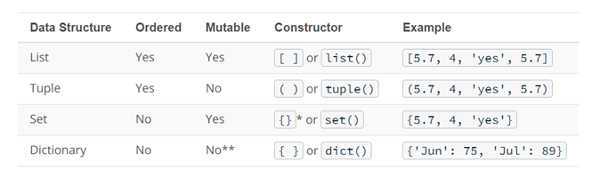
Time for…
Importing data with read_csv()
Sometimes there are a few lines of metadata at the top of the file:
- You can use skip the first “n” lines:
read_csv("data.csv", skip = 5) - Or drop all lines that start with a certain character, e.g. “#”:
read_csv("data.csv", comment = "#")
- You can use skip the first “n” lines:
The data might not have column names:
- You can use
col_names = FALSEto tellread_csv()not to treat the first row as headings, and instead label them sequentially from X1 to Xn:read_csv("data.csv", col_names = FALSE) - Alternatively, pass
headera character vector with column names:read_csv("data.csv", col_names = c("name", "surname", "age", "weight"))
- You can use
Specify the value(s) that are used to represent missing values in your file:
read_csv("data.csv", na = ".")Trim whitespace:
read_csv("data.csv", trim_ws = TRUE)
Data frames
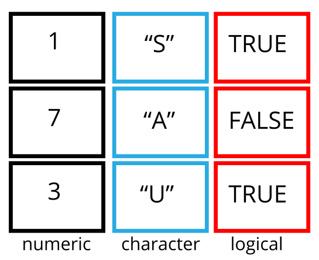
Tidy data

The data
TODO
Time for…
Formatting dates
TODO
Time for…
Data manipulation
TODO
Time for…
Pipes
TODO
Time for…
Split-apply-combine analysis

It collapses each group into a single-row summary of that group
Credit: Modified from Ranae Dietzel & Andee Kaplan
Time for…
Reshaping your data
TODO
Time for…
Cleaning and subsetting data
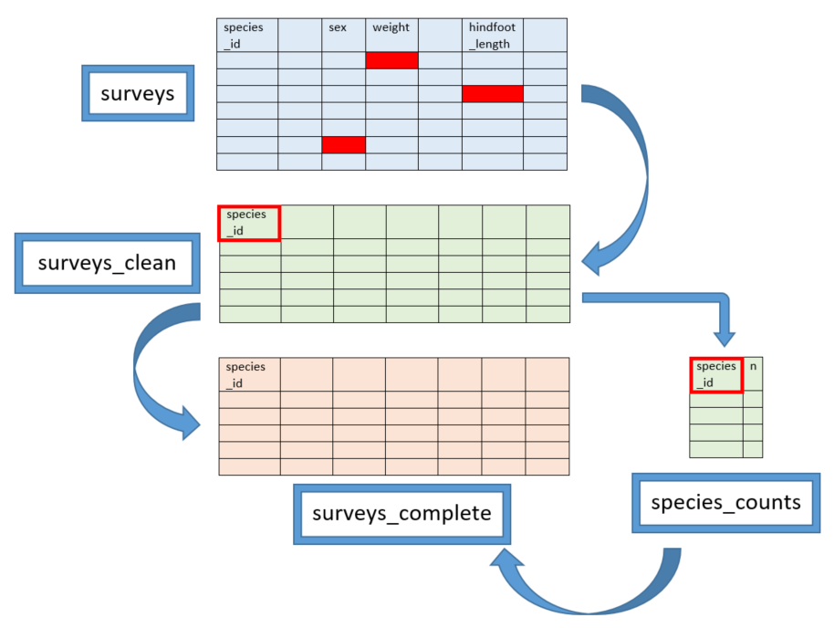
Time for…
Data visualisation: grammar of graphics
Grammar of graphics = a framework which follows a layered approach to describe and construct visualisations or graphics in a structured manner
plot = data + aesthetics + geometry
<data>= refers to a data frame (data set)<aesthetics>= indicates x and y variables & how data should be displayed in the plot (e.g. color, size, shape)<geometry>= refers to the type of graphics (bar chart, histogram, box plot, line plot, density plot, etc.)
Data visualisation: grammar of graphics
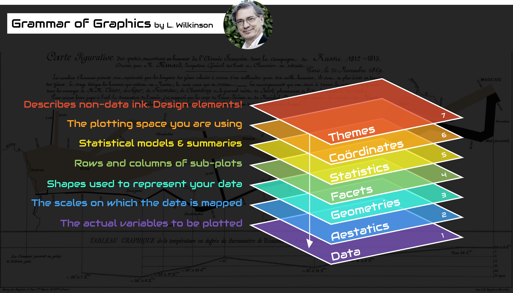
Data visualisation: grammar of graphics
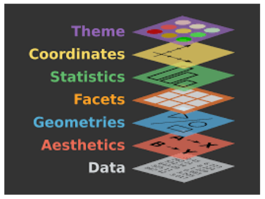
Time for…
Plot components
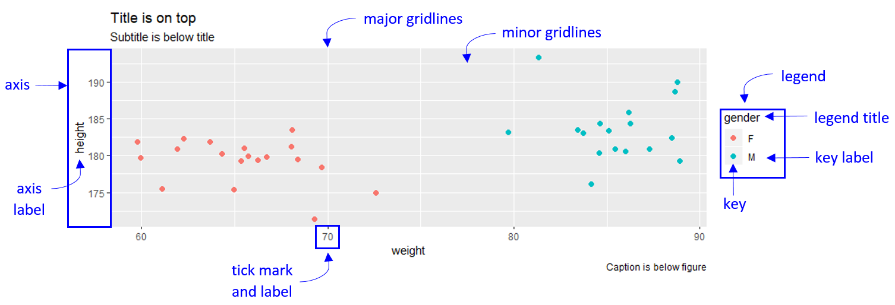
Some other useful functions (1/3)
# Import Excel file (per sheet)
my_data = pd.read_excel("data/my_data.xlsx", sheet_name="Sheet1")
# Rename specific column headers:
df = df.rename(columns={'old_name': 'new_name'})
# Separate (i.e. split) one column into multiple:
df[['col1', 'col2']] = df['column'].str.split('-', expand=True)
# Global substitutions (i.e. find and replace):
df['data'] = df['data'].str.replace('pattern', 'replacement')Some other useful functions (2/3)
Some other useful functions (3/3)
# Mutating joins: combine variables from two data frames
pd.merge(x, y, on='key') #keeps all observations in both x and y.
pd.merge(x, y, on='key', how='left') #keeps all observations in x.
pd.merge(x, y, on='key', how='right') #keeps all observations in y.
pd.merge(x, y, on='key', how='outer') #keeps all observations in x and y.
# Filtering joins: keep cases from the left-hand data frame
x[x[on].isin(y[on])] #keeps all observations in x that have a match in y.
x[~x[on].isin(y[on])] #keeps all observations in x that don't have a match in y.Joins

IF statements
IF statements
While loops
For loops
Writing your own function
- Functions allow you to automate common tasks instead of copy-and-pasting
- Writing a function has 3 main advantages over using copy-and-paste:
- You can give a function an evocative name that makes your code easier to understand.
- As requirements change, you only need to update code in one place, instead of many.
- You eliminate the chance of making incidental mistakes when you copy and paste (i.e. updating a variable name in one place, but not in another).
Writing your own function
def count_variable_occurrences(file_path, variable):
# Read the CSV file into a pandas DataFrame
df = pd.read_csv(file_path)
# Count the occurrences of the specified variable
counts = df[variable].value_counts()
return counts
# Usage
variable_counts = count_variable_occurrences(file_path, 'your_variable_name')
print(variable_counts)Useful shortcuts
ESC= Switch the cell to command modea= Create a cell above the currently selected oneb= Create a cell below the currently selected onec= Copy the contents of a cellx= Cut the contents of a cellv= Paste the previously copied or cut contentsd= Press the key twice in a row to delete the selected celly= Change cell to codem= Change cell to markdown
Additional Resources
Summary
- Reproducible projects give you a solid workflow that will serve you well in the future:
- Create a project for each data analysis project
- Create a file structure that is logical and reusable - helps to automate future work
- Keep raw data files there
- Keep scripts there
- Save your outputs (plots and cleaned data) there
- Only ever use relative paths, not absolute paths